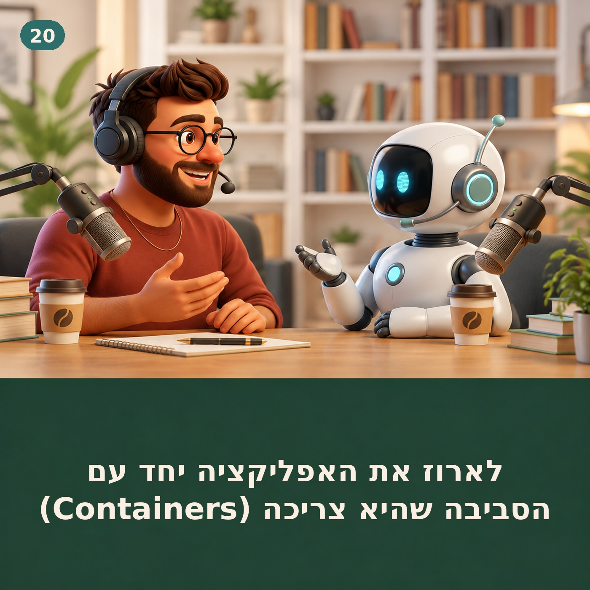
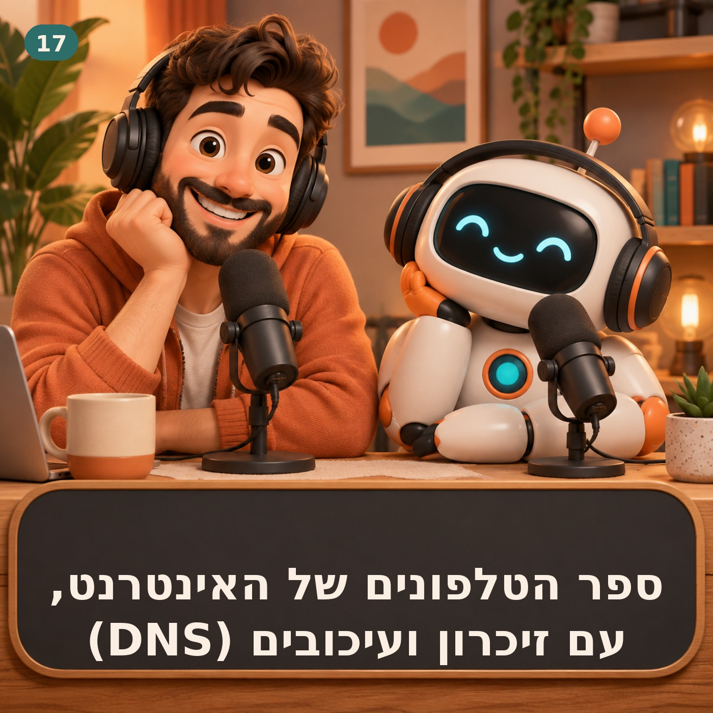
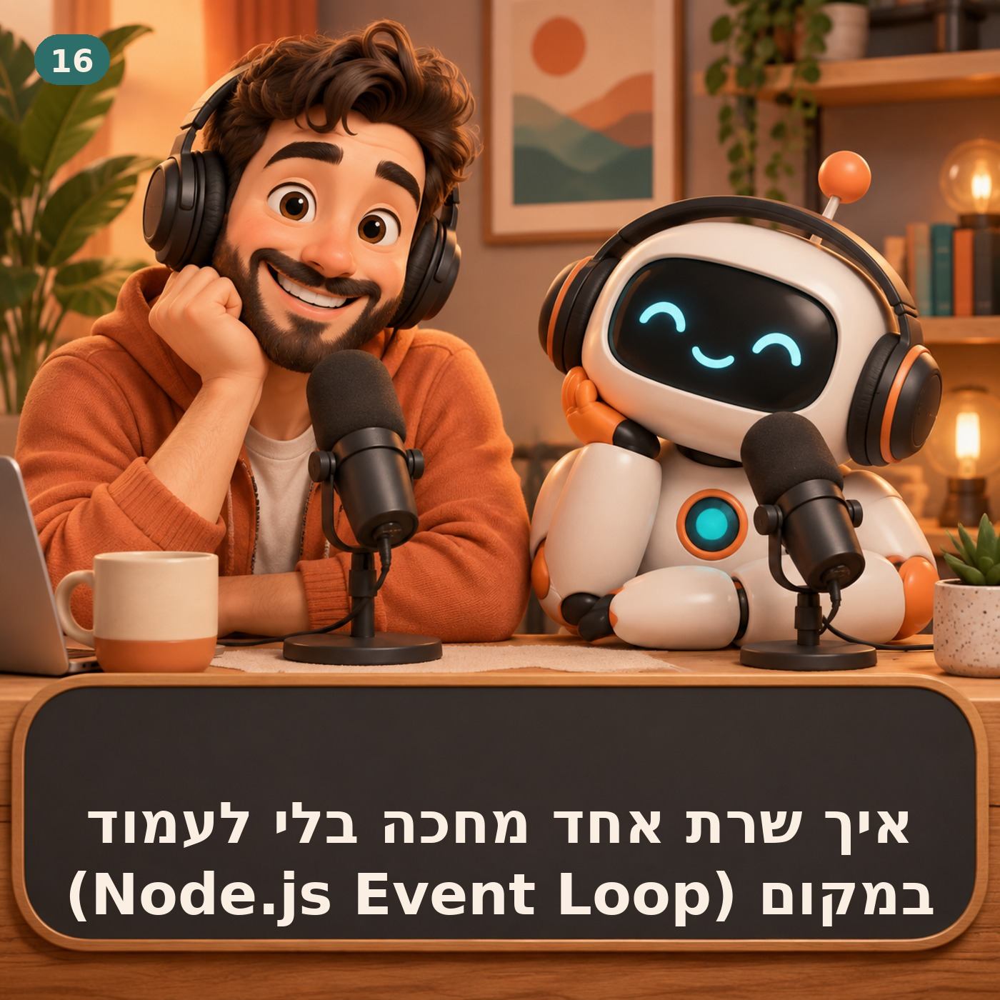
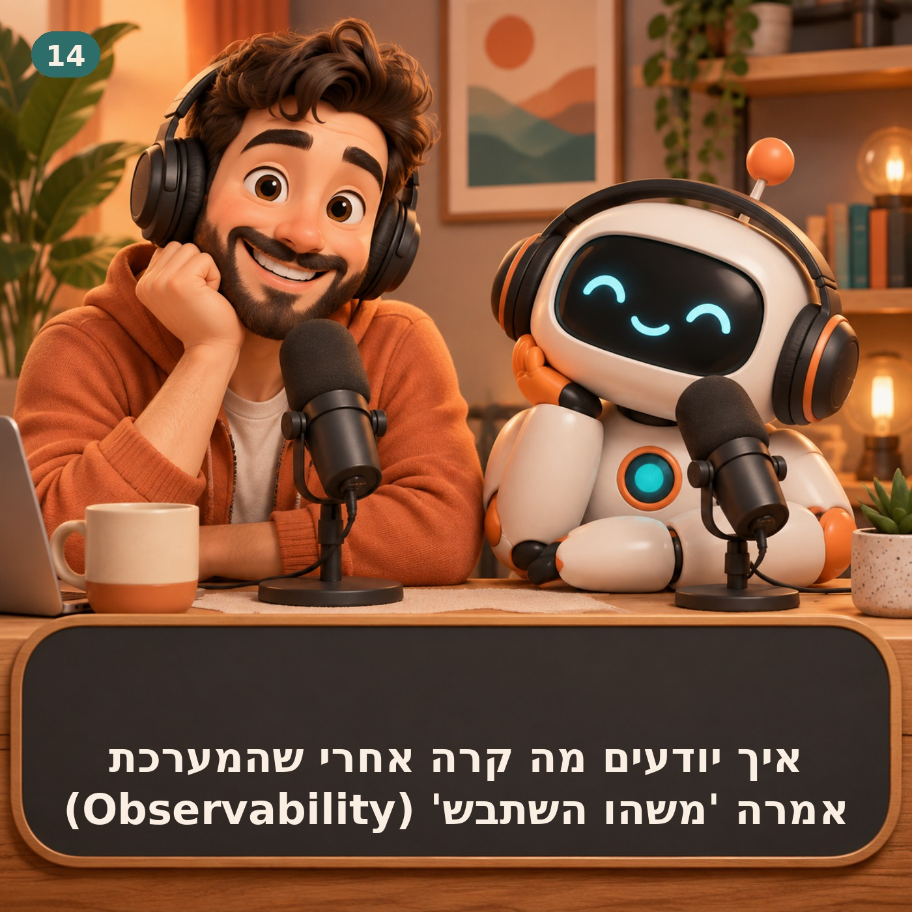
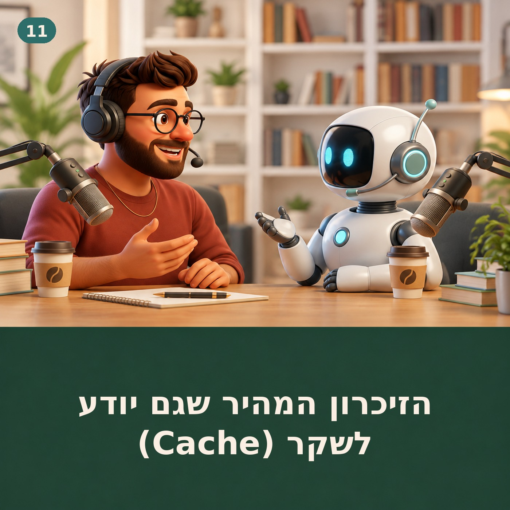
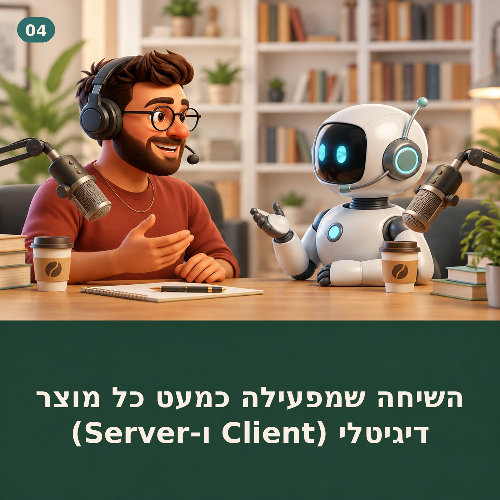
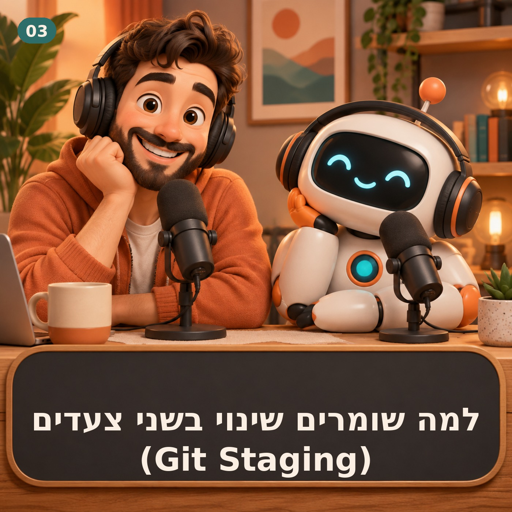

בלשון סוכנים
בלשון בני אדם
מיני-פודקאסט יומי בעברית: בכל פרק חמש דקות - מושג אחד מעולמות הטכנולוגיה, הסוכנים והבילדרות, מוסבר בגובה העיניים, בזמן שלוקח לשתות קפה.
התוכנית מופקת ומוגשת באמצעות בינה מלאכותית וקול סינתטי.
בלשון בני אדם
מיני-פודקאסט יומי בעברית: בכל פרק חמש דקות - מושג אחד מעולמות הטכנולוגיה, הסוכנים והבילדרות, מוסבר בגובה העיניים, בזמן שלוקח לשתות קפה.
התוכנית מופקת ומוגשת באמצעות בינה מלאכותית וקול סינתטי.
מנוי ב-Apple Podcasts לפי כתובת:
Message queue מפרידה בין קבלת משימה לביצועה, סופגת עומס ומאפשרת retries ו-scaling בלי להשאיר את המשתמש מחכה בתוך request ארוך. העלאת סרטון יכולה להפעיל סריקה, המרה, thumbnail, תמלול והודעה למשתמש. אם הכול קורה בתוך request אחד, כל התהליך נהיה איטי ושביר. בפרק הזה נבין producer, queue, consumer ו-acknowledgement, ונראה איך תור נותן buffering, retries ו-scaling. אחר כך נגיע למחיר: duplicates, ordering, poison messages, dead-letter queue ו-backlog שהופך ישירות ל-latency. נסיים בתכנון background job שמעדכן status בלי להשאיר את המשתמש על הקו. משימה מעשית: בחר פעולה איטית. הפרד בין מה שה-request חייב לעשות מיד לבין background job. הגדר message עם job ID ואת ה-statuses queued, processing, succeeded ו-failed, ותכנן איך המשתמש מקבל עדכון. מקורות: RabbitMQ Docs - Queues; RabbitMQ Tutorial - Work Queues. פרומפט להטמעה: נתח את הפעולה האיטית הבאה והפרד בין request מיידי ל-background job דרך message queue. הגדר producer, message schema, consumer, acknowledgement, idempotency, retry policy, dead-letter queue, ordering, statuses ו-observability. הפרק מופק ומוגש באמצעות בינה מלאכותית וקול סינתטי.
נתח את הפעולה האיטית הבאה והפרד בין request מיידי ל-background job דרך message queue. הגדר producer, message schema, consumer, acknowledgement, idempotency, retry policy, dead-letter queue, ordering, statuses ו-observability.Retry יכול לרפא תקלה רגעית או להכפיל עומס; timeout, backoff, jitter ו-idempotency קובעים לאיזה צד הוא ייפול. בקשה נכשלה, אז מנסים שוב. זה נשמע הגיוני, עד שאלפי clients עושים אותו דבר ומעמיסים דווקא על השירות שכבר מתקשה. בפרק הזה נבנה retry policy עם deadline, מספר ניסיונות מוגבל, exponential backoff ו-jitter, ונבדיל בין error זמני לבקשה שלא תשתפר לעולם. נחבר retries ל-idempotency, circuit breaker ו-load shedding, ונראה למה Agent חייב לבדוק state לפני שהוא מנסה שוב send, purchase או delete. משימה מעשית: בחר call חיצוני אחד. סווג failures לזמניים וקבועים, הגדר deadline, max attempts ו-backoff עם jitter, ואז בדוק מה יקרה אם עשרת אלפים clients יפעילו את אותה מדיניות יחד. מקורות: Google SRE Book - Addressing Cascading Failures; Amazon Builders' Library - Timeouts, retries, and backoff with jitter. פרומפט להטמעה: נתח את ה-call החיצוני הבא ובנה retry policy לפי error classes: timeout, max attempts, backoff, jitter ו-Retry-After. בדוק idempotency ו-state לפני פעולה חוזרת, והצע circuit breaker, load shedding ו-observability כדי למנוע cascading failure. הפרק מופק ומוגש באמצעות בינה מלאכותית וקול סינתטי.
נתח את ה-call החיצוני הבא ובנה retry policy לפי error classes: timeout, max attempts, backoff, jitter ו-Retry-After. בדוק idempotency ו-state לפני פעולה חוזרת, והצע circuit breaker, load shedding ו-observability כדי למנוע cascading failure.פרק הבכורה של "מה חזק היום" הוא ראיון עם אינסטינקט - הסוכן האישי שכבר עובד אצל אנשים אמיתיים כל יום. מארח שואל, אביגדור עונה: מה הוא באמת עושה, איפה הגבולות, ומה משתנה כשיש סוכן שזוכר, פועל ומדווח. ראיון עם אינסטינקט, הסוכן האישי. מה ההבדל בין צ'אטבוט לסוכן שפועל; דוגמאות יומיומיות אמיתיות; גבולות (לא מייצג בלי רשות, לא נוגע בכסף בלי אישור); איך נראית שבוע עבודה משותף; ומה הדבר הראשון שכדאי לתת לו. משימה מעשית: תנו לסוכן משימה אחת קטנה עם תוצאה מדידה - למשל "כל בוקר בשמונה, תגיד לי מה מזג האוויר ומה הפגישה הראשונה שלי" - ותבדקו אחרי שבוע אם חסך לכם חיפוש. מקורות: instinct.com (אתר החברה); ניסיון שימוש יומיומי של המשתמש. פרומפט להטמעה: בחר משימה חוזרת אחת שאתה עושה כל בוקר. כתוב לסוכן האישי שלך (או לאינסטינקט): 'כל בוקר ב-08:00 תשלח לי X'. אם אין לך סוכן - כתוב לעצמך איך היית מנסח את הבקשה. הפרק מופק ומוגש באמצעות בינה מלאכותית וקול סינתטי.
בחר משימה חוזרת אחת שאתה עושה כל בוקר. כתוב לסוכן האישי שלך (או לאינסטינקט): 'כל בוקר ב-08:00 תשלח לי X'. אם אין לך סוכן - כתוב לעצמך איך היית מנסח את הבקשה.
פרק 020לארוז את האפליקציה יחד עם הסביבה שהיא צריכה (Containers)Container מצמצם את פער ה"עובד אצלי" באמצעות סביבת ריצה ארוזה ועקבית, אבל עדיין דורש תכנון נפרד ל-secrets, security ו-data מתמשך. הבדלים בגרסת Node, ב-dependencies או ב-configuration יכולים להפוך קוד שעבד על laptop לתקלה ב-production. בפרק הזה נבדיל בין image ל-container, נבין Dockerfile ו-layers, ונראה למה container הוא process מבודד ולא virtual machine קטנה. נגיע גם לחלקים שקל לפספס: tags שאינם זהות קבועה, data שנעלם בלי volume, secrets שאסור לאפות ב-image, והסיבה ש-rollback של container לא מבטל database migration. משימה מעשית: בחר אפליקציה וחלק את סביבת הריצה לארבע רשימות: מה נכנס ל-image, מה מגיע כ-configuration, מה הוא secret, ומה חייב להישמר גם אם ה-container נמחק. מקורות: Docker documentation - Docker overview, What is a container, What is an image. פרומפט להטמעה: נתח את האפליקציה שלי וחלק את רכיביה ל-image, configuration, secrets ו-persistent data. הצע Dockerfile מינימלי ובטוח, כולל base image, non-root user, ports, health check, volume strategy וגרסת image שמאפשרת rollback. הפרק מופק ומוגש באמצעות בינה מלאכותית וקול סינתטי.
נתח את האפליקציה שלי וחלק את רכיביה ל-image, configuration, secrets ו-persistent data. הצע Dockerfile מינימלי ובטוח, כולל base image, non-root user, ports, health check, volume strategy וגרסת image שמאפשרת rollback.CI הופך build, tests ו-lint מ-checklist שתלוי בזיכרון ל-gate אוטומטי ועקבי לפני merge. קוד שעבד על מחשב אחד עדיין יכול להישבר בסביבה נקייה או להיכנס ל-main בלי שמישהו הריץ את הבדיקה הנכונה. בפרק הזה נפרק workflow של GitHub Actions ל-trigger, jobs, runner ו-steps, ונבנה מסלול CI קטן שנותן feedback לפני merge. נדבר גם על flaky tests, על הסכנה ב-workflow עם secrets, ועל ההבדל בין rule שמבקש מה-Agent להריץ tests לבין branch protection שאוכף אותם בפועל. משימה מעשית: כתוב ארבע בדיקות שהיית רוצה לפני כל merge ב-repository אחד. בחר את הקצרה והחשובה ביותר, הוסף workflow שרץ ב-pull request, ותן לו להיכשל פעם אחת בכוונה כדי לוודא שה-gate עובד. מקורות: GitHub Actions - Continuous Integration, Understand GitHub Actions. פרומפט להטמעה: מפה את תהליך ה-merge שלי והצע workflow CI מינימלי עם trigger, jobs ו-steps לבדיקות החשובות ביותר. הפרד checks מהירים מכבדים, צמצם permissions ו-secrets, והגדר gate ברור עם הודעת כשל actionable ודרך rollback ל-deploy. הפרק מופק ומוגש באמצעות בינה מלאכותית וקול סינתטי.
מפה את תהליך ה-merge שלי והצע workflow CI מינימלי עם trigger, jobs ו-steps לבדיקות החשובות ביותר. הפרד checks מהירים מכבדים, צמצם permissions ו-secrets, והגדר gate ברור עם הודעת כשל actionable ודרך rollback ל-deploy.WebSocket משאיר connection דו-כיווני פתוח לעדכונים בזמן אמת, אבל דורש תכנון ל-reconnect, ordering, backpressure והרשאות. מקורות: MDN, RFC 6455. פרומפט להטמעה: נתח את ה-feature הבא והגדר דרישות latency, כיוון התקשורת וקצב האירועים. השווה polling, Server-Sent Events ו-WebSocket, ואז תכנן reconnect, duplicate handling, backpressure, authorization ו-fallback לפתרון המומלץ. הפרק מופק ומוגש באמצעות בינה מלאכותית וקול סינתטי.
נתח את ה-feature הבא והגדר דרישות latency, כיוון התקשורת וקצב האירועים. השווה polling, Server-Sent Events ו-WebSocket, ואז תכנן reconnect, duplicate handling, backpressure, authorization ו-fallback לפתרון המומלץ.
פרק 017ספר הטלפונים של האינטרנט, עם זיכרון ועיכובים (DNS)DNS מתרגם domain לכתובת IP, אבל caches ו-TTL קובעים כמה זמן העולם ימשיך להאמין גם לתשובה שכבר השתנתה. מקורות: MDN, Cloudflare Learning. פרומפט להטמעה: עזור לי לתכנן שינוי DNS בטוח: record נוכחי, record יעד, TTL, domain ו-environment מושפעים. בנה checklist שכולל snapshot, הורדת TTL מראש, אימות authoritative, בדיקת caches ותוכנית rollback. הפרק מופק ומוגש באמצעות בינה מלאכותית וקול סינתטי.
עזור לי לתכנן שינוי DNS בטוח: record נוכחי, record יעד, TTL, domain ו-environment מושפעים. בנה checklist שכולל snapshot, הורדת TTL מראש, אימות authoritative, בדיקת caches ותוכנית rollback.
פרק 016איך שרת אחד מחכה בלי לעמוד במקום (Node.js Event Loop)ה-event loop מאפשר ל-Node.js לטפל בהרבה פעולות I/O בלי לחסום את ה-thread הראשי, אבל חישוב כבד אחד עדיין יכול לעצור את כל הדלפק. מקורות: nodejs.org. פרומפט להטמעה: נתח endpoint ב-Node.js וסמן כל פעולה כ-waiting או computing. זהה synchronous calls וחישובי CPU שעלולים לחסום את event loop, והצע non-blocking API, worker או פיצול עבודה. הפרק מופק ומוגש באמצעות בינה מלאכותית וקול סינתטי.
נתח endpoint ב-Node.js וסמן כל פעולה כ-waiting או computing. זהה synchronous calls וחישובי CPU שעלולים לחסום את event loop, והצע non-blocking API, worker או פיצול עבודה.Cursor Rules הופכים הוראות חוזרות ל-context ממוקד שנכנס בזמן הנכון, בלי להעמיס את כל חוקי הפרויקט על כל משימה. מקורות: תיעוד Cursor. פרומפט להטמעה: זהה הוראה אחת שאני חוזר עליה בעבודה עם Cursor והפוך אותה ל-rule קצר, יציב וניתן לבדיקה. המלץ אם היא שייכת ל-AGENTS.md, ל-Project Rule לפי files, או ל-enforcement טכני מחוץ ל-context. הפרק מופק ומוגש באמצעות בינה מלאכותית וקול סינתטי.
זהה הוראה אחת שאני חוזר עליה בעבודה עם Cursor והפוך אותה ל-rule קצר, יציב וניתן לבדיקה. המלץ אם היא שייכת ל-AGENTS.md, ל-Project Rule לפי files, או ל-enforcement טכני מחוץ ל-context.
פרק 014איך יודעים מה קרה אחרי שהמערכת אמרה 'משהו השתבש' (Observability)Observability מחברת logs, metrics ו-traces לסיפור שאפשר לחקור, כדי לעבור מדיווח עמום על מערכת איטית למקום המדויק שבו הבקשה נתקעה. מקורות: Google SRE Book, OpenTelemetry Docs. פרומפט להטמעה: מפה flow אחד במערכת והצע לכל שלב log שימושי, metric למגמה ו-request ID שמחבר את הסיפור. הסר מידע רגיש והגדר alert רק לסימפטום שמצריך פעולה מצד אדם. הפרק מופק ומוגש באמצעות בינה מלאכותית וקול סינתטי.
מפה flow אחד במערכת והצע לכל שלב log שימושי, metric למגמה ו-request ID שמחבר את הסיפור. הסר מידע רגיש והגדר alert רק לסימפטום שמצריך פעולה מצד אדם.Pull request טוב לא רק מחבר branch ל-main: הוא מסביר למה השינוי נחוץ, מציג את ה-diff והבדיקות, ומאפשר להתאים את עומק ה-review לסיכון לפני שעושים merge. מקורות: GitHub Docs. פרומפט להטמעה: הפוך את השינוי שלי ל-PR description עם: למה, מה השתנה, איך בדקתי ומה הסיכון. אחר כך עבור על ה-diff file by file וחפש שינוי לא מכוון, secret, regression או פעולה שקשה לבטל. הפרק מופק ומוגש באמצעות בינה מלאכותית וקול סינתטי.
הפוך את השינוי שלי ל-PR description עם: למה, מה השתנה, איך בדקתי ומה הסיכון. אחר כך עבור על ה-diff file by file וחפש שינוי לא מכוון, secret, regression או פעולה שקשה לבטל.כדי שסוכן AI יקרא מ-GitHub, יחפש ב-database או יפעל ב-Notion, מישהו צריך ללמד אותו אילו כלים קיימים ואיך משתמשים בהם. MCP מציע שפה משותפת לגילוי הכלים האלה. בפרק הזה נבנה את המפה של host, client ו-server, נבדיל בין tools, resources ו-prompts, ונבין למה פרוטוקול אחיד פותר את בעיית החיבור אבל לא את בעיית האמון. מקורות: modelcontextprotocol.io. פרומפט להטמעה: עזור לי לתכנן MCP tool contract ל-integration הבא: שם צר, תיאור, input, output, permissions ושגיאות. הפרד בין read, draft ו-write, ודרוש אישור אנושי לכל פעולה שקשה לבטל. הפרק מופק ומוגש באמצעות בינה מלאכותית וקול סינתטי.
עזור לי לתכנן MCP tool contract ל-integration הבא: שם צר, תיאור, input, output, permissions ושגיאות. הפרד בין read, draft ו-write, ודרוש אישור אנושי לכל פעולה שקשה לבטל.
פרק 011הזיכרון המהיר שגם יודע לשקר (Cache)Cache גורם למסכים להיפתח מהר יותר, מוריד עומס משרתים וחוסך קריאות יקרות ל-API. אבל כל עותק מהיר הוא גם סיכון קטן להציג עבר כאילו הוא הווה. cache hit ו-cache miss, המתח בין TTL קצר לארוך, למה invalidation מסתבך כשיש browser, CDN ו-backend, ו-cache stampede. השאלה: כמה ישן מותר למידע להיות לפני שהמהירות מפסיקה להיות שווה את זה? מקורות: MDN, Cloudflare Learning. פרומפט להטמעה: מפה את הנתונים במסך או endpoint הבא לפי קצב שינוי ומחיר של stale data. הצע לכל נתון cache key, TTL, invalidation והתנהגות ב-cache miss או כשל, והסבר את tradeoff. הפרק מופק ומוגש באמצעות בינה מלאכותית וקול סינתטי.
מפה את הנתונים במסך או endpoint הבא לפי קצב שינוי ומחיר של stale data. הצע לכל נתון cache key, TTL, invalidation והתנהגות ב-cache miss או כשל, והסבר את tradeoff.מה קורה כשכמה פעולות צריכות לקרות ביחד או בכלל לא? על transactions, ההבטחה שאו שהכול נשמר או ששום דבר לא נשמר, ומה זה ACID בלי נוסחאות. מקורות: PostgreSQL Docs. פרומפט להטמעה: פרק את ה-flow הבא לשינויי database וסמן אילו מהם חייבים לקרות ביחד בתוך transaction. זהה פעולות חיצוניות שלא ניתן לעשות להן rollback והצע idempotency, outbox או compensating action לפי הצורך. הפרק מופק ומוגש באמצעות בינה מלאכותית וקול סינתטי.
פרק את ה-flow הבא לשינויי database וסמן אילו מהם חייבים לקרות ביחד בתוך transaction. זהה פעולות חיצוניות שלא ניתן לעשות להן rollback והצע idempotency, outbox או compensating action לפי הצורך.מה זה API ולמה כולם מדברים עליו? החוזה שמאפשר לתוכנות לדבר אחת עם השנייה - מהבקשה הכי פשוטה ועד הכלים שאתם משתמשים בהם כל יום. מקורות: MDN. פרומפט להטמעה: קרא את תיעוד ה-API שאצרף והפק חוזה עבודה: endpoint, method, authentication, request, response ושגיאות. התחל בבדיקת curl הפיכה, שמור secrets מחוץ לקוד, ורק אחר כך הצע integration באפליקציה. הפרק מופק ומוגש באמצעות בינה מלאכותית וקול סינתטי.
קרא את תיעוד ה-API שאצרף והפק חוזה עבודה: endpoint, method, authentication, request, response ושגיאות. התחל בבדיקת curl הפיכה, שמור secrets מחוץ לקוד, ורק אחר כך הצע integration באפליקציה.Branch הוא מצביע נייד ל-commit, שנותן לניסוי היסטוריה משלו עד שמחליטים אם לעשות merge. פרומפט להטמעה: הצע branch קצר וממוקד למשימה הבאה, כולל שם, גבולות וקריטריונים לסיום. בדוק שהמשימה לא מערבבת כמה כוונות, והכן מסלול בטוח מ-branch ל-tests, pull request ו-merge. הפרק מופק ומוגש באמצעות בינה מלאכותית וקול סינתטי.
הצע branch קצר וממוקד למשימה הבאה, כולל שם, גבולות וקריטריונים לסיום. בדוק שהמשימה לא מערבבת כמה כוונות, והכן מסלול בטוח מ-branch ל-tests, pull request ו-merge.מערכת אמינה לא מניחה שבקשה תגיע פעם אחת; היא מזהה retries ודואגת שהכוונה תתבצע פעם אחת. מקורות: MDN, AWS Builders' Library. פרומפט להטמעה: נתח את ה-workflow שלי וזיהה פעולות שעלולות להגיע פעמיים בגלל retry, timeout או webhook חוזר. הצע idempotency key, חלון שמירה והתנהגות במקרה של אותו key עם payload שונה. הפרק מופק ומוגש באמצעות בינה מלאכותית וקול סינתטי.
נתח את ה-workflow שלי וזיהה פעולות שעלולות להגיע פעמיים בגלל retry, timeout או webhook חוזר. הצע idempotency key, חלון שמירה והתנהגות במקרה של אותו key עם payload שונה.Agent יכול לערוך, להריץ ולבדוק - ולכן prompt טוב מגדיר scope, context ותוצאה שאפשר לעשות עליה review. מקורות: תיעוד Cursor. פרומפט להטמעה: הפוך את המשימה שלי ל-brief בטוח ל-Cursor Agent: תוצאה רצויה, scope, files רלוונטיים, constraints ובדיקות קבלה. המלץ אם להתחיל ב-Ask, Plan או Agent, ובנה checklist ל-review של ה-diff לפני Git. הפרק מופק ומוגש באמצעות בינה מלאכותית וקול סינתטי.
הפוך את המשימה שלי ל-brief בטוח ל-Cursor Agent: תוצאה רצויה, scope, files רלוונטיים, constraints ובדיקות קבלה. המלץ אם להתחיל ב-Ask, Plan או Agent, ובנה checklist ל-review של ה-diff לפני Git.Prompt מסביר מה לעשות עכשיו; CLAUDE.md מסביר איך עובדים כאן - אבל הוא context, לא guardrail טכני. פרומפט להטמעה: ראיין אותי על פקודות, conventions, מבנה הפרויקט ומלכודות שחוזרות, ואז הצע CLAUDE.md קצר ומדויק. הפרד בין context קבוע, הוראה למשימה הנוכחית, וכלל שדורש enforcement טכני ולא רק טקסט. הפרק מופק ומוגש באמצעות בינה מלאכותית וקול סינתטי.
ראיין אותי על פקודות, conventions, מבנה הפרויקט ומלכודות שחוזרות, ואז הצע CLAUDE.md קצר ומדויק. הפרד בין context קבוע, הוראה למשימה הנוכחית, וכלל שדורש enforcement טכני ולא רק טקסט.
פרק 004השיחה שמפעילה כמעט כל מוצר דיגיטלי (Client ו-Server)אפליקציה היא סדרת שיחות של request ו-response, ו-system design מתחיל בשאלה מה קורה כשהשיחה נכשלת. פרומפט להטמעה: מפה את ה-flow הבא כשיחה בין client ל-server: מי שולח request, לאיזה endpoint, איזה data עובר, ומה חוזר ב-response. הוסף את מצבי הכשל העיקריים ואיך נאבחן כל אחד בלי לנחש. הפרק מופק ומוגש באמצעות בינה מלאכותית וקול סינתטי.
מפה את ה-flow הבא כשיחה בין client ל-server: מי שולח request, לאיזה endpoint, איזה data עובר, ומה חוזר ב-response. הוסף את מצבי הכשל העיקריים ואיך נאבחן כל אחד בלי לנחש.
פרק 003למה שומרים שינוי בשני צעדים (Git Staging)לפני ששומרים ב-Git יש תחנה באמצע - Staging. למה שני צעדים ולא אחד, ואיך זה מציל אותך מ-commit מבולגן. מקורות: git-scm.com, GitHub Docs. פרומפט להטמעה: בדוק איתי את git status וה-diff, וחלק את השינויים לקבוצות קטנות עם כוונה אחת בכל commit. הצע בדיוק אילו files לעשות להם stage וניסוח commit message שמתאר מה השתנה ולמה. הפרק מופק ומוגש באמצעות בינה מלאכותית וקול סינתטי.
בדוק איתי את git status וה-diff, וחלק את השינויים לקבוצות קטנות עם כוונה אחת בכל commit. הצע בדיוק אילו files לעשות להם stage וניסוח commit message שמתאר מה השתנה ולמה.נתיב של קובץ הוא לא קסם, הוא כתובת. אחד הדברים הקטנים שפותחים את הדלת לטרמינל. מקורות: תיעוד POSIX של pwd/cd. פרומפט להטמעה: עזור לי למפות את מבנה התיקיות של הפרויקט ולהסביר אילו paths הם absolute ואילו relative מנקודת העבודה הנוכחית. לפני כל פעולה בקבצים, בקש ממני לאמת pwd ו-ls והזהר אם ה-scope רחב מהנדרש. הפרק מופק ומוגש באמצעות בינה מלאכותית וקול סינתטי.
עזור לי למפות את מבנה התיקיות של הפרויקט ולהסביר אילו paths הם absolute ואילו relative מנקודת העבודה הנוכחית. לפני כל פעולה בקבצים, בקש ממני לאמת pwd ו-ls והזהר אם ה-scope רחב מהנדרש.השאלה שמשפרת כמעט כל מוצר עם סוכן AI: אם הסוכן טועה עכשיו, כמה קשה להחזיר את העולם למצב הקודם? מקורות: מכתבי בעלי המניות של אמזון 2015-2016 ו-NIST AI 600-1. פרומפט להטמעה: מפה את הפעולות שהסוכן שלי יכול לבצע וסווג כל אחת לפי מחיר הטעות, קושי הביטול והיקף ההשפעה. הצע לכל פעולה רמת אוטונומיה, נקודת אישור ומנגנון rollback שמקטינים את הנזק האפשרי. הפרק מופק ומוגש באמצעות בינה מלאכותית וקול סינתטי.
מפה את הפעולות שהסוכן שלי יכול לבצע וסווג כל אחת לפי מחיר הטעות, קושי הביטול והיקף ההשפעה. הצע לכל פעולה רמת אוטונומיה, נקודת אישור ומנגנון rollback שמקטינים את הנזק האפשרי.